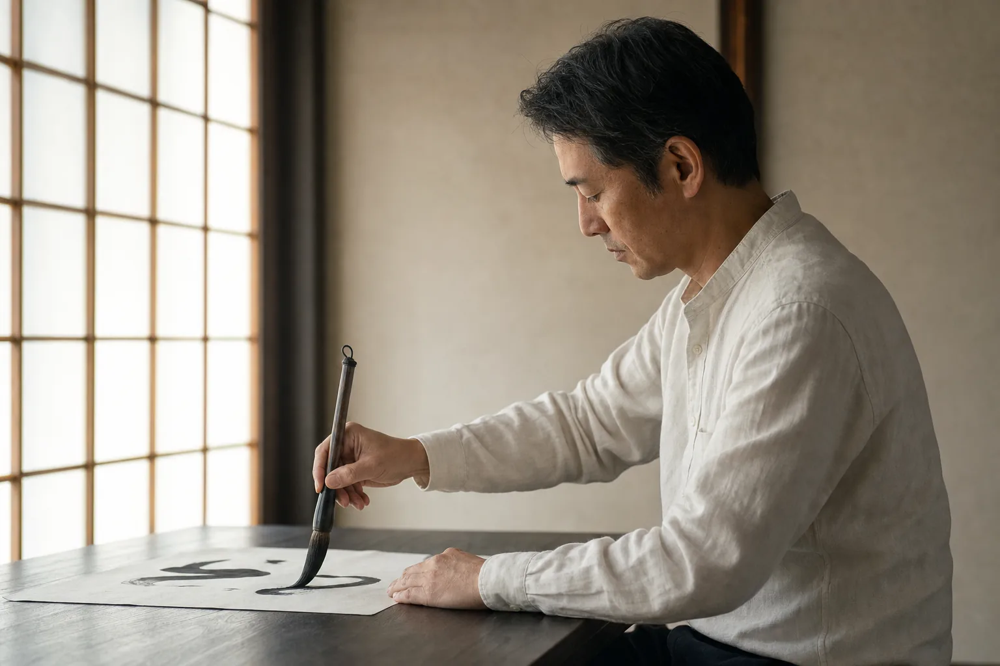

01
かきかたKAKIKATA — for kids
幼児〜小学校低学年の入門。鉛筆の持ち方から、文字の骨格を整える指導まで。
書は、技を競うものではない。 筆を持つ姿勢、墨と紙に向かう間（ま）、 そして書き終えた一枚に、その人がそのまま立ち上がる。
当教室は、段位の取得と全国大会の実績を支柱としつつ、 本来の書道がもつ静謐さを失わぬ指導を、30年続けてきました。
筆を、整える。
呼吸を、整える。
そして、字が、整う。
幼児の入門から、大人の段位取得まで。 対象年齢と目的別に、6つの正式コースを設けています。
幼児〜小学校低学年の入門。鉛筆の持ち方から、文字の骨格を整える指導まで。
小学生〜大人。楷書から始め、行書・草書、明治神宮展への出品まで段階指導。
鉛筆・ボールペンによる楷書の基本。学校提出物や検定に直結する技術を養う。
大人のためのペン字。署名・宛名書き・履歴書まで、実生活で使える美しい文字へ。
熨斗袋・芳名帳・年賀状など、冠婚葬祭と暮らしの場で求められる筆遣いを習得。
文部科学省後援の硬筆書写・毛筆書写検定に正式対応。段位の認定まで教室内で完結。
月4回・1回60〜90分。振替可。入会金・年会費は不要です。

一柳 先生 ICHIYANAGI SENSEI
国立大学にて書道を専門に学び、海津市に開塾して30年。 明治神宮全国少年新春書道展では10年連続で優秀団体賞、 5名の生徒が個人最高位の第一席賞を受賞してきました。 技の高さを語るのではなく、技を支える「姿勢」と「呼吸」を、ひとりずつに手渡しで伝えています。
岐阜県海津市の2拠点で稽古をしています。 営業日が異なるため、通いやすい方をお選びください。
| 教室 | 月 | 火 | 水 | 木 | 金 | 土 | 日・祝 |
|---|---|---|---|---|---|---|---|
| 平田 | 16:00 — 20:00 | 16:00 — 20:00 | 18:30 — 20:00 | 16:00 — 20:00 | |||
| 高須 | 16:00 — 20:00 | 16:00 — 20:00 | 13:00 — 20:00 |
月4回・1回60〜90分。振替可。月謝はお問い合わせください。
無料体験は随時受付。
平田教室・高須教室、いずれも見学のみのご来訪も歓迎します。